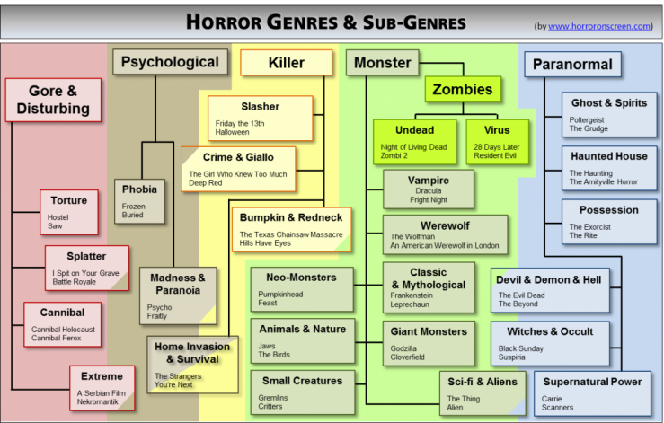
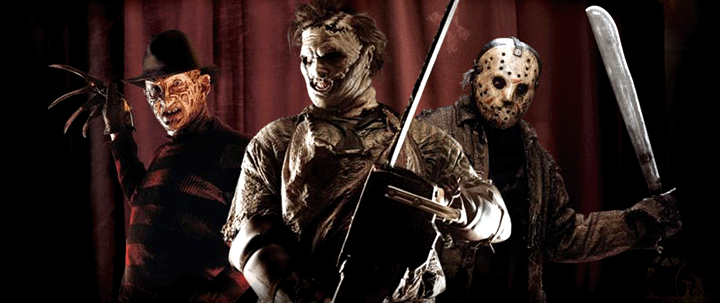
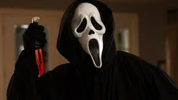
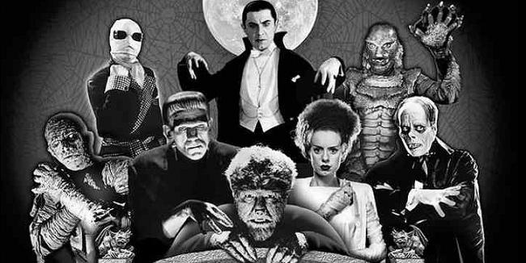
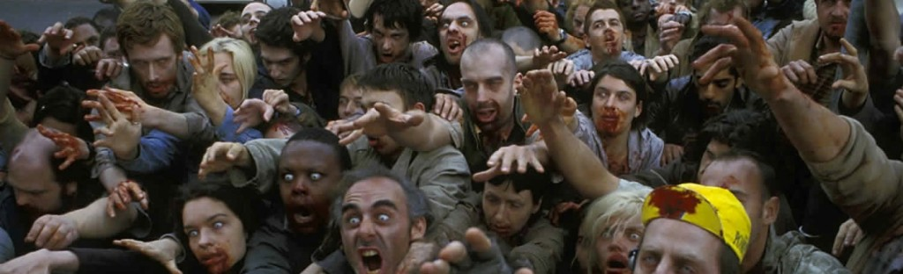

There are 4 main horror areas:Killers; Monsters; Paranormal; Psychological;
To this, we add 2 subgenres that are so popular that they can be considered as proper genre:Zombies and Gore/Splatter
SLASHER/KILLER
This genre features a killer,natural or supernatural ,usually
a psycopath , which for some reasons decimates people.This genre mixes thriller,crime and psychological thriller
CLASSIC SLASHER
Basic slashers have existed for a long time but became really popular in early 80's
with the succes of movies like Halloween and Friday the 13th
- Slasher
- Classic Slasher
- Halloween(1978)
- Friday the 13th(1980)
- A nightmare on Elm Street(1984)
- Scream(1996)
- Classic Slasher

|
The trailer to Scream(1996)
BUMPKIN AND REDNECK
Created with early movies such as 2000 Maniacs (1964) or Deliverance (1972), this unofficial sub-genre plays on the myth that backwoods and remote countryside are populated with inbred freaks and maniacs.The sub-genre, which became famous with the success of Texas Chain Saw Massacre. often features families or clans of crazies, and often treat of cannibalism.
- Texas Chain Saw Massacre(1974)
- Hills Have Eyes(1977)
- Wrong Turn(2003)
- Wolf Creek(2005)
HOME INVASION AND SURVIVAL
The sub-genre is now getting increasingly popular. The
assailants are often masked, or not shown at all, which reinforce the almost claustrophobic fear induced by these films.
- Them(2006)
- Inside(2007)
- The Strangers(2008)
- You are Next(2013)
MONSTERS/CREATURES
Existing from the early 1910’s with the first versions of Frankenstein or King Kong, the monster genre is “the” classic of horror. It is also the morediverse and widespread horror genre, so let’s look directly at its large sub-genres compilation.

Classic Monsters and Mythological Monsters
This sub-genre regroups the monster films that have either been inspired by early roman (e.g. Frankenstein in 1818 or The Invisible Man in 1897),or by well-known myths and legend such as BigFoot or the Bogeyman. We can also throw in it the monsters from the fantastic world (Trolls, Dragons, etc) and those who
became really famous in the 30’s suc0h as The Mummy or The Creature from the Black Lagoon, since they now became a part of the modern mythological bestiary
- Frankenstein(1931)
- The Mummy(1932)
- Leprechaun(1993)
- Troll Hunter(2010)
Sci-Fi Monsters and Aliens
The monster genre has always been trying to justify the presence of its horrible monsters: nuclear reasons, scientific experiments, evolved species, etc.This sub-genre regroups these films whose solid
science-fiction plots make them often closer to sci-fi than to the rest of the mediocre scenario monster films
- King Kong(1933)
- Godzilla(1954)
- Attack of the 50 feet woman(1958)
- Cloverfield
Werewolf
Werewolves are human who, after being infected by a lycanthropic virus or curse, can transform into big wolf-like beasts. The transformation can beself-decided or, as in most movies, occurring unwillingly during the full-moon. Werewolf films are often quite dramatic, since the werewolf
curse is often seen as a tragedy. One of the highlight of these film is the great human-werewolf transformation scenes that they often features.
- An American Werewolf in London(1981)
- The Howling(1979)
- Dog Soldiers(2002)
Vampire
Vampires are mythical creatures that seem to have always existed in various folklores. However, the vampire concept as we know it really took offwith “Dracula”, the 1897’s novel from Bram Stoker. Vampires in horror films are invariably undead creatures thirsty for blood and vulnerable to sunlight. Additional rules then differs slightly depending on the movie: contagious when biting,
allergic to garlic, sensitive to crosses or holy water, killed by a stake in the heart, cannot enter without being invited, etc
- Nosferatu(1922)
- Dracula(1931&1922)
- Fright Night(1985)
- 30 days of Night(2007)
Trailer to 30 Days Of Night(2007)
ZOMBIE/VIRUS
Zombie

Classic zombies are typically seen rising out of their tombs, or as the results of someone being bitten by another zombie. In any case, they are dead, or more precisely undead.They are usually slow (although they tend to run in modern movies, resulting in increased tension), stupid and numerous. This sub-genre appeared quite early,
with White Zombie (1932) being considered as the first zombie film. They then become hugely famous thanks to the work of Georges A. Romero and its “Trilogy of the Dead”
- Nights of The Living Dead(1968)
- Let Sleeping Corpses Lie(1974)
- Dawn Of The Dead(1978)
- Zombie(1979)
The trailer to Dawn Of The Dead(1978)